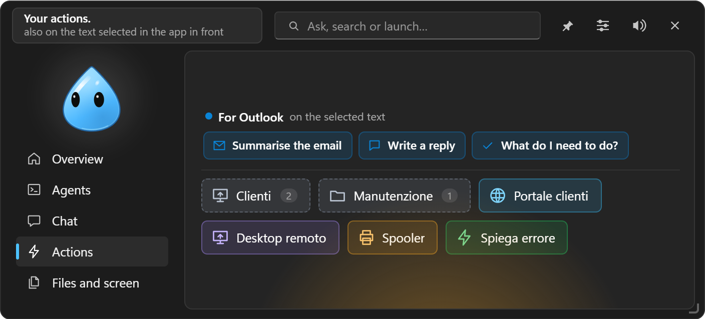
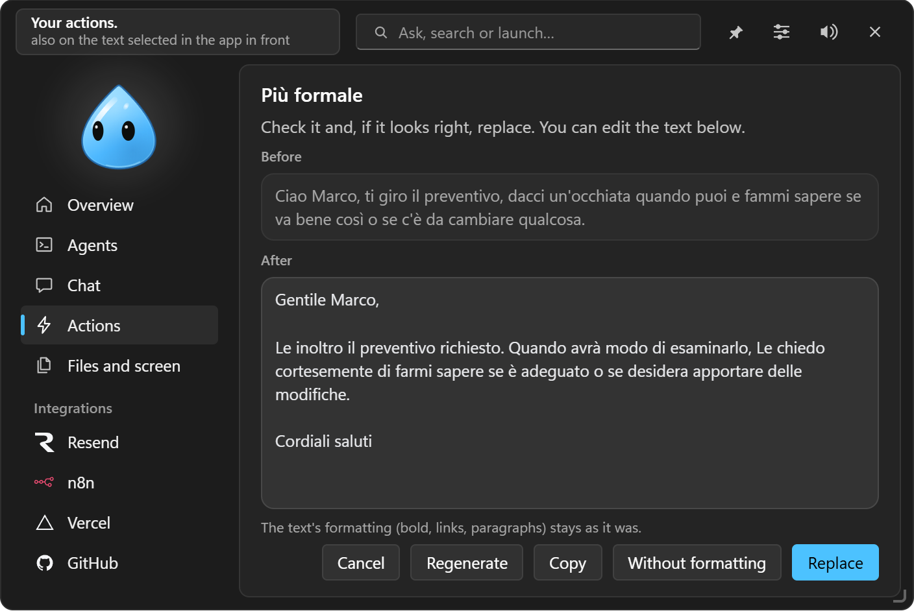

Quick actions and shortcuts
Buttons for links, programs, scripts and AI questions; suggestions for the app in use; the menu on selected text.

#Kinds of action
Settings → Quick actions creates the buttons of the ⚡ tab:
| Kind | What it does |
|---|---|
| Ask the chat | Sends a saved prompt, applied to copied text, selected text or the dropped file, or the summary of your day today or tomorrow from the integrations (with something to add, if you like). With {{fields}} in the text it becomes a template to fill in |
| Script | PowerShell or Command Prompt commands, hidden, with the output in the island (with Stop, 5-minute timeout). Runs only after a click; with "Ask for confirmation" it shows the commands first |
| Program / folder | Starts a program with its arguments (e.g. mstsc /v:server01) or opens a folder |
| Link | Opens an address in the browser |
| Keys | Presses a key combination in the app in use (for the bar of the app in use) |
Each action has an icon (over 150 drawn in code, or Automatic: a link's site favicon, a program's own icon; a new link or program takes it by itself until you pick another), a colour, a folder, a shortcut and can be reordered with ↑ ↓. With more than 8 actions a Search an action field appears.
Actions also run from /name in the chat, from the island's top field, from automations, from the chat itself ("run the backup") and from Telegram. Actions belong to the profile.
#Suggestions for the app in use
At the top of the ⚡ tab you get ready-made actions for the app you're using, applied to the selected text:
- Outlook: Summarise the mail, Write a reply;
- Excel: Explain this data;
- Word: Proofread, Make it more formal;
- browser: Summarise, Translate;
- code editor: Explain, Find bugs;
- terminal: Explain the error;
- Teams, PDF and any other app: Summarise, Translate, Proofread.
EasyIsland copies the selection, opens the chat with the text attached and then puts back on the clipboard what was there.
#Menu on selected text
Select some text in any program and press Win+Alt+A: a menu appears at the mouse with your quick actions that work on text, with folders as submenus. With Notion on there are also Note in Notion and Task in Notion.
#Replace
When an action rewrites the text (proofread, translate, make formal), the island shows before and after with Replace, Regenerate, Copy and Cancel. Replace pastes over the selection only if the window and the text are still the same, and keeps the formatting (bold, lists, Word and Outlook styles).

#Global shortcuts
| Shortcut | What it does |
|---|---|
| Ctrl+Space | Opens the island |
| Ctrl+Alt+K | Chat with what you copied |
| Ctrl+Alt+H | Clipboard history |
| Ctrl+Alt+Shift+S | Box and ask |
| Ctrl+Alt+Shift+R | Selected text into the Collection, with its source |
| Ctrl+Alt+Shift+P | Pending request (N, Y, S, 1–9) |
| Ctrl+Alt+Shift+T | Session's app to the front |
| Win+Alt+A | Menu on selected text |
| Next integration, sounds on / off | To be assigned |
| Every action | Its own, if you give it one |
To change one: click the field and press the combination (Esc cancels, Del removes it). If another app already uses it, Settings tell you.
#The bar of the app in use
For each program you can choose actions to show next to the closed character when that program is in the foreground: for example in Outlook "Reply with AI" and a Keys action to archive. Set it up in Settings → Quick actions.